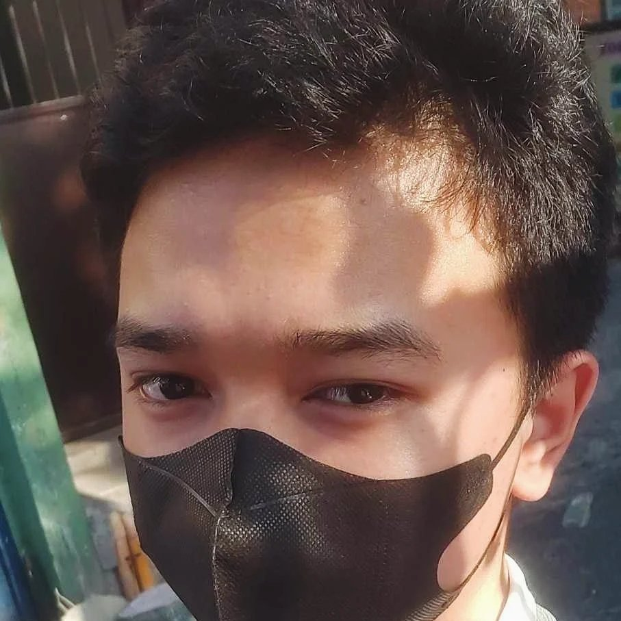

I am a student in Dr.Filemon C. Aguilar Memorial College of Las Pinas and the course I have taken is Bachelor of Science in Information Systems, working with Michael Villanueva with this webpage gives me more experience in web development. I am mostly intact and engaged in public speaking and social sciences, learning beyond on programming and technology.
2024 - Present
Expected Completion: 2028
2022 - 2023
2023 - 2024
Achieved with Honors on Grade 11 SHS S.Y 2022 - 2023
Achieved with Honors on Grade 12 SHS S.Y 2023 - 2024
One in two in section of with Good Conduct on Grade 12 SHS S.Y 2023 - 2024
One of the most active and serving scouts in the institution on Grade 12 SHS S.Y 2023 - 2024